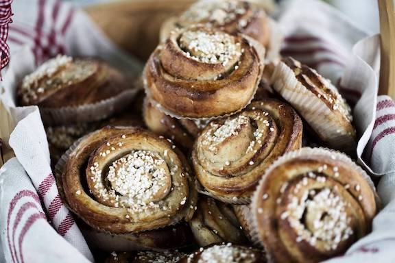

Cinnamon Buns

Description
Likely the most quintessential Swedish snack or dessert, cinnamon buns are so revered by the Swedes that they have dedicated October 4th as Cinnamon Bun Day!
Ingredients
Starter:
- 50g of fresh yeast
- 2,5 dl of room-tempered whole milk
- 100g caster sugar
- 350g wheat flour
Finish:
- 2,5 dl room-tempered whole milk
- 150g of granulated sugaar
- 200g butter cut into pieces
- 10g of salt
- 750g wheat flour
- 1 egg
- 3tbsp of fresh ground cardamom
Filling:
- 200g room-tempered butter
- 200g caster sugar
- 3 tbso cinnamon
- 2 pinches of salt
Cooking steps
- Begin with the starter. Dissolve the yeast in the milk by hand or in a stand mixer. Add the sugar and flour and work everything to an elastic dough, about 5 minutes in the stand mixer or 10 minutes by hand. Cover the dough and leave to rise to double size in room tempered place for about 30 minutes.
- Meanwhile, make the filling by just mixing sugar, butter, cinnamon and salt. Also, prepare the cardamom sugar if you want to use it for topping. This is done by mixing caster sugar and freshly ground cardamom. Set all this aside (at room temperature).
- Add the ingredients for the finish to the starter and work the dough elastic, about 15 minutes by hand or 10 minutes in a stand mixer. Don't cheat with this; you want a lot of gluten in the dough and a really elastic dough.
- Form the dough into a thin rectangular “sheet” about 60x60 cm on a surface dusted with flour. This is done by using a rolling pin. (You might need to add some more flour underneath the dough once or twice, meanwhile forming the dough with the rolling pin.) Spread the filling over the entire dough and fold 1/3 of the surface from the top down to the centre. Then fold 1/3 of the surface from the bottom of the sheet over what you just folded. This is called a “threefold”. Cut this into strips that are about 2 cm wide. (about 80 grams/bun) Here you can choose if you want to twist each strip and twin it into a knot. Or, if you prefer, roll the strip to a spin and fold the edge of the strip under the bun. Place the buns on trays covered with parchment paper and cool to chill. Place the trays in a cool place like a basement (but not a fridge). Allow to rise for 4-5 hours. Then take the trays to room temperature and allow to rest until they are fluffy and about twice as large.
- Brush with egg wash before baking and sprinkle with nib or cardamom sugar (see instructions above). Bake in the middle of the oven at 225 °C (435 °F) until the cinnamon buns get a golden brown colour.
- Let the buns cool and freeze the cinnamon buns that are not to be eaten the same day or possibly the following day.